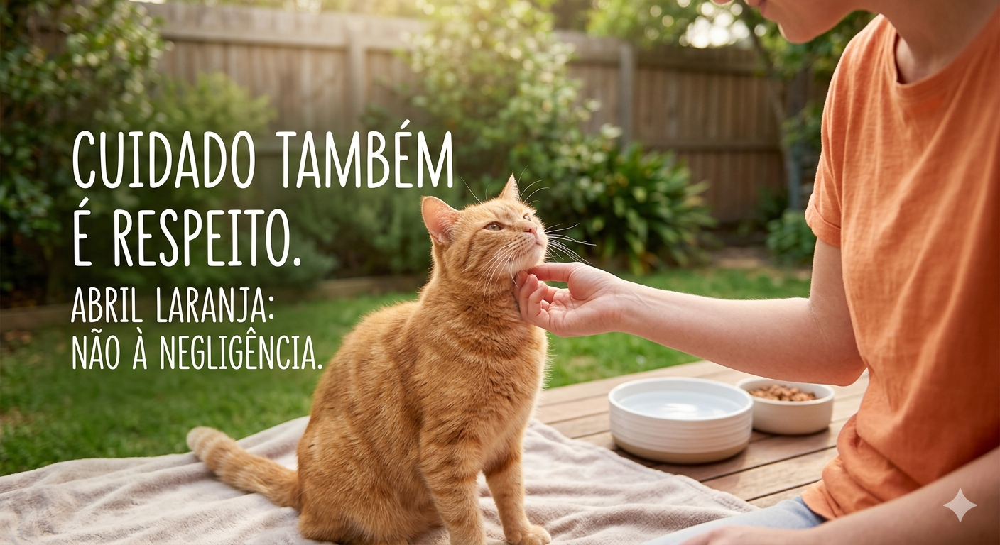

Página Inicial | Campanhas | ONGs | Leis | Sobre o Projeto
| Tipo de Ação | Descrição |
|---|---|
| Dê Voz a Quem Não Fala | Esta campanha foca no papel do cidadão como testemunha. O objetivo é mostrar que o silêncio diante de uma agressão é uma forma de conivência. Através de posts com olhares expressivos de animais, ela incentiva o uso dos canais de denúncia, reforçando que a proteção animal depende da coragem da comunidade em relatar o que vê. |
| Maus-Tratos é Crime (Lei Sansão) | Focada no aspecto jurídico, esta campanha busca educar sobre as consequências legais da violência contra cães e gatos. Com um tom mais sério e informativo, ela destaca que a pena de reclusão aumentou e que o agressor agora vai para a prisão, combatendo a ideia de impunidade e desencorajando a violência através do conhecimento da lei. |
| Cuidado Também é Respeito | Esta vertente aborda os maus-tratos invisíveis, como manter o animal acorrentado, sem abrigo do sol ou sem água limpa. O foco é a prevenção por meio da educação, ensinando o que é a guarda responsável e mostrando que a negligência, mesmo que por falta de informação, causa tanto sofrimento quanto a agressão física. |
